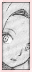

| » Haruno Sakura ;
It's amusing to speculate how Lee acts around his "love." From the moment he laid eyes on Sakura, he decided that he would protect her until he dies. Sakura might have thought this was a pick-up line, but as Lee proves later, he meant every word. From Tenten's head shake at Lee's behavior, it might be safe to assume that Lee's had the same reaction before with other infatuations. It seems he has chosen Sakura as the latest girl to be infatuated with. In their first meeting, Lee attempts to impress through fighting abilities and air kisses. Sakura in turn, shrieks and insults him from head to toe. Ironically, her reaction (quotes) was probably parallel to many of the viewers. Admittedly, Lee's appearance isn't something girls would drool over. On the contrary, girls would probably act exactly like Sakura when such situations occur. Later on, Lee's face would flush whenever he thought of her, and she becomes an incentive to make himself stronger. Lee adheres to this promise of protecting Sakura by coming to her rescue in the second part of the Chuunin exam. After the match between Lee and the 3 Sound shinobi, Lee told Sakura that the next time they meet, he would be a stronger man. As for Sakura, she started out "judging a book by its cover," a mistake people often make. However, every time she saw him after that, she warmed up to him a little more. She changes her views slightly after being protected by Lee. She was inspired by Lee to become a stronger ninja. Lee was of course, deeply touched by this. Sakura's views of him changed with time. Slowly, she starts to show some genuine care for Lee, especially during and after the Chuunin exam dual with Gaara. She even brought flowers on a frequent basis for him in the hospital. Whenever the previous flower would wither, she brought a fresh one to replace it. The flower she chose was the narcissus, a flower that stands valiantly even in the coldness of the winter and waits for spring. She found the narcissus fitting for both Sasuke and Lee. Both of them were injured at the time, and the flower is symbolic for both of their stamina and determination. Lee's infatuation with Sakura seems to be only skin deep. Perhaps he just thinks she's cute. Perhaps he just likes impressing certain girls. He hasn't show any other reason why he likes her. Lee never mentions her abilities or much else. Although Sakura starts off disliking him, Lee is unfazed and keeps trying to gain her affection. I believe getting Sakura to like him is another way of proving he can triumph if he believes in himself. « reverse |
PRELUDE GENERAL Naruto Terms Chakra LEE First Glance Personality Techniques Fighting Style Transition Weaknesses Analysis RIVALRY vs. Sasuke vs. Neji vs. Gaara vs. Sound vs. Kimimaro RELATIONS Maito Gai Teammates Sakura Naruto EXTRAS Symbolism Seiyuu Quotations References EDEN Reasons Images Wallpapers Fanworks Graphics EPILOGUE Updates Linkage Credits Joined Contact Guestbook |